L'écrou serré, graphite et orange, avec le chat du garage
Le B et le F serrent un écrou orange ; un chat, dessiné sur la même grille que les lettres, dort sur le O. Lettres et chat en graphite (blanc cassé sur fond sombre), écrou en orange atelier, rien d'autre : deux couleurs, aucun effet, tout en chemins vectoriels.
32 px, grossi 6 fois bords droits sur les pixels pairs16 px, grossi 12 fois dessiné pixel par pixel
À 16 px l'écrou devient un carré orange de 2 px isolé par un pixel de fond de chaque côté : B et F entaillés restent lisibles. À 32 px l'écrou retrouve sa forme d'hexagone percé.
Oreilles de chat sur l'écrou : essai écarté
essai, 16 px grossitaille réelle
Lisible, mais il se lit « chat » avant « garage » et perd le nom : on dirait l'icône d'un vétérinaire. Le favicon garde B, écrou, F ; le chat vit dans le logo, là où il a la place d'être un chat.
Palette
Graphite#3A3935 10,5:1 sur blanc cassé
Graphite profond#2F2E2B 12,4:1 sous blanc cassé
Orange atelier#E4682B objet : 3,0:1 sur clair, 3,5:1 sur graphite
Orange foncé#B5501B texte : 4,6:1 sur blanc cassé
Blanc cassé#F5F4F2 fond clair de référence
Texte#262626 13,8:1 sur blanc cassé
Gris clair#C9C6BF 6,8:1 sur graphite
En-tête de site, taille réelle
Appeler le garage
Votre voiture entre de bonnes mains, à Choisy-le-Roi.
Texte d'exemple pour juger l'en-tête en situation ; logo compact à 40 px de haut, chat compris (capitales de 27 px).
Menu
Votre voiture entre de bonnes mains.
Mobile, 375 px de large : sous 40 px de haut, l'en-tête passe à logo-compact-sans-chat.svg (32 px). Le chat réduit à 32 px ne serait plus qu'une tache ; sans lui, les capitales montent à 31 px de haut et l'écrou garde 12 px de large.
Mises en situation
Enseigne de façade
Bandeau graphite, logo négatif en lettres découpées ou boîtier ; écrou en orange mat, jamais chromé. Drapeau sur potence : le symbole.
Véhicule d'atelier
Fourgon blanc : version couleur, chat compris ; carrosserie sombre : négatif. Une seule bande orange en bas de caisse, pas de décor.
Carte de visite, 85 x 55 mm, échelle 4 px par mm

Prénom Nom
Mécanicien, gérant
Téléphone et adresse à confirmer Choisy-le-Roi
Recto graphite avec le chat ; verso clair sans chat (logo de 30 mm : le chat y serait trop petit).
Tenue brodée
Poitrine : logo compact négatif avec chat brodé à 110 mm de large, pour garder un jeu d'un millimètre autour de l'écrou (fil blanc cassé et orange). En dessous : symbole seul, 40 mm.
Ce qui a changé depuis le concept c5
Palette graphite #3A3935 et orange atelier #E4682B ; lettres et chat graphite, écrou orange, deux couleurs au total.
Risque de lecture « BoF » : alésage réduit de 21 à 16 (écrou plein et percé, plus un petit o), toujours en orange hors une couleur.
Jeu écrou et lettres porté de 8 à 10 unités, pour le vinyle et la broderie.
Chanfreins raccourcis de 28 à 20, AUTO élargi et approches ouvertes : moins pochoir, panses du B plus droites.
Chat couché sur le O, même grammaire que les lettres : aplats, oreilles en triangles à 60 degrés, jeu constant de 10, queue en crochet dessinée comme le bas du U, yeux clos évidés.
Favicon dessiné au pixel à 16 et 32 px ; symbole recalé sur une grille de 16 unités, barre médiane affinée pour rouvrir les contreformes du B.
Descripteur en graphite sur clair (deux couleurs à fabriquer), gris clair sur graphite.